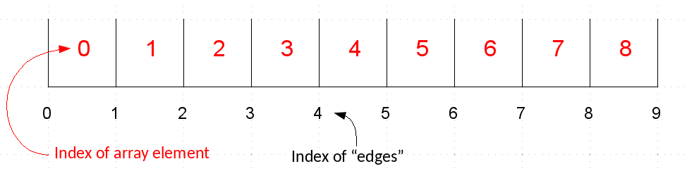

NumPy¶
this notebook is based on the SciPy NumPy tutorial
import numpy as np
NumPy provides a multidimensional array class as well as a large number of functions that operate on arrays.
NumPy arrays allow you to write fast (optimized) code that works on arrays of data. To do this, there are some restrictions on arrays:
all elements are of the same data type (e.g. float)
the size of the array is fixed in memory, and specified when you create the array (e.g., you cannot grow the array like you do with lists)
The nice part is that arithmetic operations work on entire arrays—this means that you can avoid writing loops in python (which tend to be slow). Instead the “looping” is done in the underlying compiled code
Array Creation and Properties¶
There are a lot of ways to create arrays. Let’s look at a few
Here we create an array using arange and then change its shape to be 3 rows and 5 columns. Note the row-major ordering—you’ll see that the rows are together in the inner [] (more on this in a bit)
a = np.arange(15)
a
array([ 0, 1, 2, 3, 4, 5, 6, 7, 8, 9, 10, 11, 12, 13, 14])
a = np.arange(15).reshape(3,5)
print(a)
[[ 0 1 2 3 4]
[ 5 6 7 8 9]
[10 11 12 13 14]]
an array is an object of the ndarray class, and it has methods that know how to work on the array data. Here, .reshape() is one of the many methods.
A NumPy array has a lot of meta-data associated with it describing its shape, datatype, etc.
print(a.ndim)
print(a.shape)
print(a.size)
print(a.dtype)
print(a.itemsize)
print(type(a))
2
(3, 5)
15
int64
8
<class 'numpy.ndarray'>
help(a)
Help on ndarray object:
class ndarray(builtins.object)
| ndarray(shape, dtype=float, buffer=None, offset=0,
| strides=None, order=None)
|
| An array object represents a multidimensional, homogeneous array
| of fixed-size items. An associated data-type object describes the
| format of each element in the array (its byte-order, how many bytes it
| occupies in memory, whether it is an integer, a floating point number,
| or something else, etc.)
|
| Arrays should be constructed using `array`, `zeros` or `empty` (refer
| to the See Also section below). The parameters given here refer to
| a low-level method (`ndarray(...)`) for instantiating an array.
|
| For more information, refer to the `numpy` module and examine the
| methods and attributes of an array.
|
| Parameters
| ----------
| (for the __new__ method; see Notes below)
|
| shape : tuple of ints
| Shape of created array.
| dtype : data-type, optional
| Any object that can be interpreted as a numpy data type.
| buffer : object exposing buffer interface, optional
| Used to fill the array with data.
| offset : int, optional
| Offset of array data in buffer.
| strides : tuple of ints, optional
| Strides of data in memory.
| order : {'C', 'F'}, optional
| Row-major (C-style) or column-major (Fortran-style) order.
|
| Attributes
| ----------
| T : ndarray
| Transpose of the array.
| data : buffer
| The array's elements, in memory.
| dtype : dtype object
| Describes the format of the elements in the array.
| flags : dict
| Dictionary containing information related to memory use, e.g.,
| 'C_CONTIGUOUS', 'OWNDATA', 'WRITEABLE', etc.
| flat : numpy.flatiter object
| Flattened version of the array as an iterator. The iterator
| allows assignments, e.g., ``x.flat = 3`` (See `ndarray.flat` for
| assignment examples; TODO).
| imag : ndarray
| Imaginary part of the array.
| real : ndarray
| Real part of the array.
| size : int
| Number of elements in the array.
| itemsize : int
| The memory use of each array element in bytes.
| nbytes : int
| The total number of bytes required to store the array data,
| i.e., ``itemsize * size``.
| ndim : int
| The array's number of dimensions.
| shape : tuple of ints
| Shape of the array.
| strides : tuple of ints
| The step-size required to move from one element to the next in
| memory. For example, a contiguous ``(3, 4)`` array of type
| ``int16`` in C-order has strides ``(8, 2)``. This implies that
| to move from element to element in memory requires jumps of 2 bytes.
| To move from row-to-row, one needs to jump 8 bytes at a time
| (``2 * 4``).
| ctypes : ctypes object
| Class containing properties of the array needed for interaction
| with ctypes.
| base : ndarray
| If the array is a view into another array, that array is its `base`
| (unless that array is also a view). The `base` array is where the
| array data is actually stored.
|
| See Also
| --------
| array : Construct an array.
| zeros : Create an array, each element of which is zero.
| empty : Create an array, but leave its allocated memory unchanged (i.e.,
| it contains "garbage").
| dtype : Create a data-type.
| numpy.typing.NDArray : A :term:`generic <generic type>` version
| of ndarray.
|
| Notes
| -----
| There are two modes of creating an array using ``__new__``:
|
| 1. If `buffer` is None, then only `shape`, `dtype`, and `order`
| are used.
| 2. If `buffer` is an object exposing the buffer interface, then
| all keywords are interpreted.
|
| No ``__init__`` method is needed because the array is fully initialized
| after the ``__new__`` method.
|
| Examples
| --------
| These examples illustrate the low-level `ndarray` constructor. Refer
| to the `See Also` section above for easier ways of constructing an
| ndarray.
|
| First mode, `buffer` is None:
|
| >>> np.ndarray(shape=(2,2), dtype=float, order='F')
| array([[0.0e+000, 0.0e+000], # random
| [ nan, 2.5e-323]])
|
| Second mode:
|
| >>> np.ndarray((2,), buffer=np.array([1,2,3]),
| ... offset=np.int_().itemsize,
| ... dtype=int) # offset = 1*itemsize, i.e. skip first element
| array([2, 3])
|
| Methods defined here:
|
| __abs__(self, /)
| abs(self)
|
| __add__(self, value, /)
| Return self+value.
|
| __and__(self, value, /)
| Return self&value.
|
| __array__(...)
| a.__array__([dtype], /) -> reference if type unchanged, copy otherwise.
|
| Returns either a new reference to self if dtype is not given or a new array
| of provided data type if dtype is different from the current dtype of the
| array.
|
| __array_function__(...)
|
| __array_prepare__(...)
| a.__array_prepare__(obj) -> Object of same type as ndarray object obj.
|
| __array_ufunc__(...)
|
| __array_wrap__(...)
| a.__array_wrap__(obj) -> Object of same type as ndarray object a.
|
| __bool__(self, /)
| self != 0
|
| __complex__(...)
|
| __contains__(self, key, /)
| Return key in self.
|
| __copy__(...)
| a.__copy__()
|
| Used if :func:`copy.copy` is called on an array. Returns a copy of the array.
|
| Equivalent to ``a.copy(order='K')``.
|
| __deepcopy__(...)
| a.__deepcopy__(memo, /) -> Deep copy of array.
|
| Used if :func:`copy.deepcopy` is called on an array.
|
| __delitem__(self, key, /)
| Delete self[key].
|
| __divmod__(self, value, /)
| Return divmod(self, value).
|
| __eq__(self, value, /)
| Return self==value.
|
| __float__(self, /)
| float(self)
|
| __floordiv__(self, value, /)
| Return self//value.
|
| __format__(...)
| Default object formatter.
|
| __ge__(self, value, /)
| Return self>=value.
|
| __getitem__(self, key, /)
| Return self[key].
|
| __gt__(self, value, /)
| Return self>value.
|
| __iadd__(self, value, /)
| Return self+=value.
|
| __iand__(self, value, /)
| Return self&=value.
|
| __ifloordiv__(self, value, /)
| Return self//=value.
|
| __ilshift__(self, value, /)
| Return self<<=value.
|
| __imatmul__(self, value, /)
| Return self@=value.
|
| __imod__(self, value, /)
| Return self%=value.
|
| __imul__(self, value, /)
| Return self*=value.
|
| __index__(self, /)
| Return self converted to an integer, if self is suitable for use as an index into a list.
|
| __int__(self, /)
| int(self)
|
| __invert__(self, /)
| ~self
|
| __ior__(self, value, /)
| Return self|=value.
|
| __ipow__(self, value, /)
| Return self**=value.
|
| __irshift__(self, value, /)
| Return self>>=value.
|
| __isub__(self, value, /)
| Return self-=value.
|
| __iter__(self, /)
| Implement iter(self).
|
| __itruediv__(self, value, /)
| Return self/=value.
|
| __ixor__(self, value, /)
| Return self^=value.
|
| __le__(self, value, /)
| Return self<=value.
|
| __len__(self, /)
| Return len(self).
|
| __lshift__(self, value, /)
| Return self<<value.
|
| __lt__(self, value, /)
| Return self<value.
|
| __matmul__(self, value, /)
| Return self@value.
|
| __mod__(self, value, /)
| Return self%value.
|
| __mul__(self, value, /)
| Return self*value.
|
| __ne__(self, value, /)
| Return self!=value.
|
| __neg__(self, /)
| -self
|
| __or__(self, value, /)
| Return self|value.
|
| __pos__(self, /)
| +self
|
| __pow__(self, value, mod=None, /)
| Return pow(self, value, mod).
|
| __radd__(self, value, /)
| Return value+self.
|
| __rand__(self, value, /)
| Return value&self.
|
| __rdivmod__(self, value, /)
| Return divmod(value, self).
|
| __reduce__(...)
| a.__reduce__()
|
| For pickling.
|
| __reduce_ex__(...)
| Helper for pickle.
|
| __repr__(self, /)
| Return repr(self).
|
| __rfloordiv__(self, value, /)
| Return value//self.
|
| __rlshift__(self, value, /)
| Return value<<self.
|
| __rmatmul__(self, value, /)
| Return value@self.
|
| __rmod__(self, value, /)
| Return value%self.
|
| __rmul__(self, value, /)
| Return value*self.
|
| __ror__(self, value, /)
| Return value|self.
|
| __rpow__(self, value, mod=None, /)
| Return pow(value, self, mod).
|
| __rrshift__(self, value, /)
| Return value>>self.
|
| __rshift__(self, value, /)
| Return self>>value.
|
| __rsub__(self, value, /)
| Return value-self.
|
| __rtruediv__(self, value, /)
| Return value/self.
|
| __rxor__(self, value, /)
| Return value^self.
|
| __setitem__(self, key, value, /)
| Set self[key] to value.
|
| __setstate__(...)
| a.__setstate__(state, /)
|
| For unpickling.
|
| The `state` argument must be a sequence that contains the following
| elements:
|
| Parameters
| ----------
| version : int
| optional pickle version. If omitted defaults to 0.
| shape : tuple
| dtype : data-type
| isFortran : bool
| rawdata : string or list
| a binary string with the data (or a list if 'a' is an object array)
|
| __sizeof__(...)
| Size of object in memory, in bytes.
|
| __str__(self, /)
| Return str(self).
|
| __sub__(self, value, /)
| Return self-value.
|
| __truediv__(self, value, /)
| Return self/value.
|
| __xor__(self, value, /)
| Return self^value.
|
| all(...)
| a.all(axis=None, out=None, keepdims=False, *, where=True)
|
| Returns True if all elements evaluate to True.
|
| Refer to `numpy.all` for full documentation.
|
| See Also
| --------
| numpy.all : equivalent function
|
| any(...)
| a.any(axis=None, out=None, keepdims=False, *, where=True)
|
| Returns True if any of the elements of `a` evaluate to True.
|
| Refer to `numpy.any` for full documentation.
|
| See Also
| --------
| numpy.any : equivalent function
|
| argmax(...)
| a.argmax(axis=None, out=None)
|
| Return indices of the maximum values along the given axis.
|
| Refer to `numpy.argmax` for full documentation.
|
| See Also
| --------
| numpy.argmax : equivalent function
|
| argmin(...)
| a.argmin(axis=None, out=None)
|
| Return indices of the minimum values along the given axis.
|
| Refer to `numpy.argmin` for detailed documentation.
|
| See Also
| --------
| numpy.argmin : equivalent function
|
| argpartition(...)
| a.argpartition(kth, axis=-1, kind='introselect', order=None)
|
| Returns the indices that would partition this array.
|
| Refer to `numpy.argpartition` for full documentation.
|
| .. versionadded:: 1.8.0
|
| See Also
| --------
| numpy.argpartition : equivalent function
|
| argsort(...)
| a.argsort(axis=-1, kind=None, order=None)
|
| Returns the indices that would sort this array.
|
| Refer to `numpy.argsort` for full documentation.
|
| See Also
| --------
| numpy.argsort : equivalent function
|
| astype(...)
| a.astype(dtype, order='K', casting='unsafe', subok=True, copy=True)
|
| Copy of the array, cast to a specified type.
|
| Parameters
| ----------
| dtype : str or dtype
| Typecode or data-type to which the array is cast.
| order : {'C', 'F', 'A', 'K'}, optional
| Controls the memory layout order of the result.
| 'C' means C order, 'F' means Fortran order, 'A'
| means 'F' order if all the arrays are Fortran contiguous,
| 'C' order otherwise, and 'K' means as close to the
| order the array elements appear in memory as possible.
| Default is 'K'.
| casting : {'no', 'equiv', 'safe', 'same_kind', 'unsafe'}, optional
| Controls what kind of data casting may occur. Defaults to 'unsafe'
| for backwards compatibility.
|
| * 'no' means the data types should not be cast at all.
| * 'equiv' means only byte-order changes are allowed.
| * 'safe' means only casts which can preserve values are allowed.
| * 'same_kind' means only safe casts or casts within a kind,
| like float64 to float32, are allowed.
| * 'unsafe' means any data conversions may be done.
| subok : bool, optional
| If True, then sub-classes will be passed-through (default), otherwise
| the returned array will be forced to be a base-class array.
| copy : bool, optional
| By default, astype always returns a newly allocated array. If this
| is set to false, and the `dtype`, `order`, and `subok`
| requirements are satisfied, the input array is returned instead
| of a copy.
|
| Returns
| -------
| arr_t : ndarray
| Unless `copy` is False and the other conditions for returning the input
| array are satisfied (see description for `copy` input parameter), `arr_t`
| is a new array of the same shape as the input array, with dtype, order
| given by `dtype`, `order`.
|
| Notes
| -----
| .. versionchanged:: 1.17.0
| Casting between a simple data type and a structured one is possible only
| for "unsafe" casting. Casting to multiple fields is allowed, but
| casting from multiple fields is not.
|
| .. versionchanged:: 1.9.0
| Casting from numeric to string types in 'safe' casting mode requires
| that the string dtype length is long enough to store the max
| integer/float value converted.
|
| Raises
| ------
| ComplexWarning
| When casting from complex to float or int. To avoid this,
| one should use ``a.real.astype(t)``.
|
| Examples
| --------
| >>> x = np.array([1, 2, 2.5])
| >>> x
| array([1. , 2. , 2.5])
|
| >>> x.astype(int)
| array([1, 2, 2])
|
| byteswap(...)
| a.byteswap(inplace=False)
|
| Swap the bytes of the array elements
|
| Toggle between low-endian and big-endian data representation by
| returning a byteswapped array, optionally swapped in-place.
| Arrays of byte-strings are not swapped. The real and imaginary
| parts of a complex number are swapped individually.
|
| Parameters
| ----------
| inplace : bool, optional
| If ``True``, swap bytes in-place, default is ``False``.
|
| Returns
| -------
| out : ndarray
| The byteswapped array. If `inplace` is ``True``, this is
| a view to self.
|
| Examples
| --------
| >>> A = np.array([1, 256, 8755], dtype=np.int16)
| >>> list(map(hex, A))
| ['0x1', '0x100', '0x2233']
| >>> A.byteswap(inplace=True)
| array([ 256, 1, 13090], dtype=int16)
| >>> list(map(hex, A))
| ['0x100', '0x1', '0x3322']
|
| Arrays of byte-strings are not swapped
|
| >>> A = np.array([b'ceg', b'fac'])
| >>> A.byteswap()
| array([b'ceg', b'fac'], dtype='|S3')
|
| ``A.newbyteorder().byteswap()`` produces an array with the same values
| but different representation in memory
|
| >>> A = np.array([1, 2, 3])
| >>> A.view(np.uint8)
| array([1, 0, 0, 0, 0, 0, 0, 0, 2, 0, 0, 0, 0, 0, 0, 0, 3, 0, 0, 0, 0, 0,
| 0, 0], dtype=uint8)
| >>> A.newbyteorder().byteswap(inplace=True)
| array([1, 2, 3])
| >>> A.view(np.uint8)
| array([0, 0, 0, 0, 0, 0, 0, 1, 0, 0, 0, 0, 0, 0, 0, 2, 0, 0, 0, 0, 0, 0,
| 0, 3], dtype=uint8)
|
| choose(...)
| a.choose(choices, out=None, mode='raise')
|
| Use an index array to construct a new array from a set of choices.
|
| Refer to `numpy.choose` for full documentation.
|
| See Also
| --------
| numpy.choose : equivalent function
|
| clip(...)
| a.clip(min=None, max=None, out=None, **kwargs)
|
| Return an array whose values are limited to ``[min, max]``.
| One of max or min must be given.
|
| Refer to `numpy.clip` for full documentation.
|
| See Also
| --------
| numpy.clip : equivalent function
|
| compress(...)
| a.compress(condition, axis=None, out=None)
|
| Return selected slices of this array along given axis.
|
| Refer to `numpy.compress` for full documentation.
|
| See Also
| --------
| numpy.compress : equivalent function
|
| conj(...)
| a.conj()
|
| Complex-conjugate all elements.
|
| Refer to `numpy.conjugate` for full documentation.
|
| See Also
| --------
| numpy.conjugate : equivalent function
|
| conjugate(...)
| a.conjugate()
|
| Return the complex conjugate, element-wise.
|
| Refer to `numpy.conjugate` for full documentation.
|
| See Also
| --------
| numpy.conjugate : equivalent function
|
| copy(...)
| a.copy(order='C')
|
| Return a copy of the array.
|
| Parameters
| ----------
| order : {'C', 'F', 'A', 'K'}, optional
| Controls the memory layout of the copy. 'C' means C-order,
| 'F' means F-order, 'A' means 'F' if `a` is Fortran contiguous,
| 'C' otherwise. 'K' means match the layout of `a` as closely
| as possible. (Note that this function and :func:`numpy.copy` are very
| similar but have different default values for their order=
| arguments, and this function always passes sub-classes through.)
|
| See also
| --------
| numpy.copy : Similar function with different default behavior
| numpy.copyto
|
| Notes
| -----
| This function is the preferred method for creating an array copy. The
| function :func:`numpy.copy` is similar, but it defaults to using order 'K',
| and will not pass sub-classes through by default.
|
| Examples
| --------
| >>> x = np.array([[1,2,3],[4,5,6]], order='F')
|
| >>> y = x.copy()
|
| >>> x.fill(0)
|
| >>> x
| array([[0, 0, 0],
| [0, 0, 0]])
|
| >>> y
| array([[1, 2, 3],
| [4, 5, 6]])
|
| >>> y.flags['C_CONTIGUOUS']
| True
|
| cumprod(...)
| a.cumprod(axis=None, dtype=None, out=None)
|
| Return the cumulative product of the elements along the given axis.
|
| Refer to `numpy.cumprod` for full documentation.
|
| See Also
| --------
| numpy.cumprod : equivalent function
|
| cumsum(...)
| a.cumsum(axis=None, dtype=None, out=None)
|
| Return the cumulative sum of the elements along the given axis.
|
| Refer to `numpy.cumsum` for full documentation.
|
| See Also
| --------
| numpy.cumsum : equivalent function
|
| diagonal(...)
| a.diagonal(offset=0, axis1=0, axis2=1)
|
| Return specified diagonals. In NumPy 1.9 the returned array is a
| read-only view instead of a copy as in previous NumPy versions. In
| a future version the read-only restriction will be removed.
|
| Refer to :func:`numpy.diagonal` for full documentation.
|
| See Also
| --------
| numpy.diagonal : equivalent function
|
| dot(...)
| a.dot(b, out=None)
|
| Dot product of two arrays.
|
| Refer to `numpy.dot` for full documentation.
|
| See Also
| --------
| numpy.dot : equivalent function
|
| Examples
| --------
| >>> a = np.eye(2)
| >>> b = np.ones((2, 2)) * 2
| >>> a.dot(b)
| array([[2., 2.],
| [2., 2.]])
|
| This array method can be conveniently chained:
|
| >>> a.dot(b).dot(b)
| array([[8., 8.],
| [8., 8.]])
|
| dump(...)
| a.dump(file)
|
| Dump a pickle of the array to the specified file.
| The array can be read back with pickle.load or numpy.load.
|
| Parameters
| ----------
| file : str or Path
| A string naming the dump file.
|
| .. versionchanged:: 1.17.0
| `pathlib.Path` objects are now accepted.
|
| dumps(...)
| a.dumps()
|
| Returns the pickle of the array as a string.
| pickle.loads or numpy.loads will convert the string back to an array.
|
| Parameters
| ----------
| None
|
| fill(...)
| a.fill(value)
|
| Fill the array with a scalar value.
|
| Parameters
| ----------
| value : scalar
| All elements of `a` will be assigned this value.
|
| Examples
| --------
| >>> a = np.array([1, 2])
| >>> a.fill(0)
| >>> a
| array([0, 0])
| >>> a = np.empty(2)
| >>> a.fill(1)
| >>> a
| array([1., 1.])
|
| flatten(...)
| a.flatten(order='C')
|
| Return a copy of the array collapsed into one dimension.
|
| Parameters
| ----------
| order : {'C', 'F', 'A', 'K'}, optional
| 'C' means to flatten in row-major (C-style) order.
| 'F' means to flatten in column-major (Fortran-
| style) order. 'A' means to flatten in column-major
| order if `a` is Fortran *contiguous* in memory,
| row-major order otherwise. 'K' means to flatten
| `a` in the order the elements occur in memory.
| The default is 'C'.
|
| Returns
| -------
| y : ndarray
| A copy of the input array, flattened to one dimension.
|
| See Also
| --------
| ravel : Return a flattened array.
| flat : A 1-D flat iterator over the array.
|
| Examples
| --------
| >>> a = np.array([[1,2], [3,4]])
| >>> a.flatten()
| array([1, 2, 3, 4])
| >>> a.flatten('F')
| array([1, 3, 2, 4])
|
| getfield(...)
| a.getfield(dtype, offset=0)
|
| Returns a field of the given array as a certain type.
|
| A field is a view of the array data with a given data-type. The values in
| the view are determined by the given type and the offset into the current
| array in bytes. The offset needs to be such that the view dtype fits in the
| array dtype; for example an array of dtype complex128 has 16-byte elements.
| If taking a view with a 32-bit integer (4 bytes), the offset needs to be
| between 0 and 12 bytes.
|
| Parameters
| ----------
| dtype : str or dtype
| The data type of the view. The dtype size of the view can not be larger
| than that of the array itself.
| offset : int
| Number of bytes to skip before beginning the element view.
|
| Examples
| --------
| >>> x = np.diag([1.+1.j]*2)
| >>> x[1, 1] = 2 + 4.j
| >>> x
| array([[1.+1.j, 0.+0.j],
| [0.+0.j, 2.+4.j]])
| >>> x.getfield(np.float64)
| array([[1., 0.],
| [0., 2.]])
|
| By choosing an offset of 8 bytes we can select the complex part of the
| array for our view:
|
| >>> x.getfield(np.float64, offset=8)
| array([[1., 0.],
| [0., 4.]])
|
| item(...)
| a.item(*args)
|
| Copy an element of an array to a standard Python scalar and return it.
|
| Parameters
| ----------
| \*args : Arguments (variable number and type)
|
| * none: in this case, the method only works for arrays
| with one element (`a.size == 1`), which element is
| copied into a standard Python scalar object and returned.
|
| * int_type: this argument is interpreted as a flat index into
| the array, specifying which element to copy and return.
|
| * tuple of int_types: functions as does a single int_type argument,
| except that the argument is interpreted as an nd-index into the
| array.
|
| Returns
| -------
| z : Standard Python scalar object
| A copy of the specified element of the array as a suitable
| Python scalar
|
| Notes
| -----
| When the data type of `a` is longdouble or clongdouble, item() returns
| a scalar array object because there is no available Python scalar that
| would not lose information. Void arrays return a buffer object for item(),
| unless fields are defined, in which case a tuple is returned.
|
| `item` is very similar to a[args], except, instead of an array scalar,
| a standard Python scalar is returned. This can be useful for speeding up
| access to elements of the array and doing arithmetic on elements of the
| array using Python's optimized math.
|
| Examples
| --------
| >>> np.random.seed(123)
| >>> x = np.random.randint(9, size=(3, 3))
| >>> x
| array([[2, 2, 6],
| [1, 3, 6],
| [1, 0, 1]])
| >>> x.item(3)
| 1
| >>> x.item(7)
| 0
| >>> x.item((0, 1))
| 2
| >>> x.item((2, 2))
| 1
|
| itemset(...)
| a.itemset(*args)
|
| Insert scalar into an array (scalar is cast to array's dtype, if possible)
|
| There must be at least 1 argument, and define the last argument
| as *item*. Then, ``a.itemset(*args)`` is equivalent to but faster
| than ``a[args] = item``. The item should be a scalar value and `args`
| must select a single item in the array `a`.
|
| Parameters
| ----------
| \*args : Arguments
| If one argument: a scalar, only used in case `a` is of size 1.
| If two arguments: the last argument is the value to be set
| and must be a scalar, the first argument specifies a single array
| element location. It is either an int or a tuple.
|
| Notes
| -----
| Compared to indexing syntax, `itemset` provides some speed increase
| for placing a scalar into a particular location in an `ndarray`,
| if you must do this. However, generally this is discouraged:
| among other problems, it complicates the appearance of the code.
| Also, when using `itemset` (and `item`) inside a loop, be sure
| to assign the methods to a local variable to avoid the attribute
| look-up at each loop iteration.
|
| Examples
| --------
| >>> np.random.seed(123)
| >>> x = np.random.randint(9, size=(3, 3))
| >>> x
| array([[2, 2, 6],
| [1, 3, 6],
| [1, 0, 1]])
| >>> x.itemset(4, 0)
| >>> x.itemset((2, 2), 9)
| >>> x
| array([[2, 2, 6],
| [1, 0, 6],
| [1, 0, 9]])
|
| max(...)
| a.max(axis=None, out=None, keepdims=False, initial=<no value>, where=True)
|
| Return the maximum along a given axis.
|
| Refer to `numpy.amax` for full documentation.
|
| See Also
| --------
| numpy.amax : equivalent function
|
| mean(...)
| a.mean(axis=None, dtype=None, out=None, keepdims=False, *, where=True)
|
| Returns the average of the array elements along given axis.
|
| Refer to `numpy.mean` for full documentation.
|
| See Also
| --------
| numpy.mean : equivalent function
|
| min(...)
| a.min(axis=None, out=None, keepdims=False, initial=<no value>, where=True)
|
| Return the minimum along a given axis.
|
| Refer to `numpy.amin` for full documentation.
|
| See Also
| --------
| numpy.amin : equivalent function
|
| newbyteorder(...)
| arr.newbyteorder(new_order='S', /)
|
| Return the array with the same data viewed with a different byte order.
|
| Equivalent to::
|
| arr.view(arr.dtype.newbytorder(new_order))
|
| Changes are also made in all fields and sub-arrays of the array data
| type.
|
|
|
| Parameters
| ----------
| new_order : string, optional
| Byte order to force; a value from the byte order specifications
| below. `new_order` codes can be any of:
|
| * 'S' - swap dtype from current to opposite endian
| * {'<', 'little'} - little endian
| * {'>', 'big'} - big endian
| * '=' - native order, equivalent to `sys.byteorder`
| * {'|', 'I'} - ignore (no change to byte order)
|
| The default value ('S') results in swapping the current
| byte order.
|
|
| Returns
| -------
| new_arr : array
| New array object with the dtype reflecting given change to the
| byte order.
|
| nonzero(...)
| a.nonzero()
|
| Return the indices of the elements that are non-zero.
|
| Refer to `numpy.nonzero` for full documentation.
|
| See Also
| --------
| numpy.nonzero : equivalent function
|
| partition(...)
| a.partition(kth, axis=-1, kind='introselect', order=None)
|
| Rearranges the elements in the array in such a way that the value of the
| element in kth position is in the position it would be in a sorted array.
| All elements smaller than the kth element are moved before this element and
| all equal or greater are moved behind it. The ordering of the elements in
| the two partitions is undefined.
|
| .. versionadded:: 1.8.0
|
| Parameters
| ----------
| kth : int or sequence of ints
| Element index to partition by. The kth element value will be in its
| final sorted position and all smaller elements will be moved before it
| and all equal or greater elements behind it.
| The order of all elements in the partitions is undefined.
| If provided with a sequence of kth it will partition all elements
| indexed by kth of them into their sorted position at once.
| axis : int, optional
| Axis along which to sort. Default is -1, which means sort along the
| last axis.
| kind : {'introselect'}, optional
| Selection algorithm. Default is 'introselect'.
| order : str or list of str, optional
| When `a` is an array with fields defined, this argument specifies
| which fields to compare first, second, etc. A single field can
| be specified as a string, and not all fields need to be specified,
| but unspecified fields will still be used, in the order in which
| they come up in the dtype, to break ties.
|
| See Also
| --------
| numpy.partition : Return a parititioned copy of an array.
| argpartition : Indirect partition.
| sort : Full sort.
|
| Notes
| -----
| See ``np.partition`` for notes on the different algorithms.
|
| Examples
| --------
| >>> a = np.array([3, 4, 2, 1])
| >>> a.partition(3)
| >>> a
| array([2, 1, 3, 4])
|
| >>> a.partition((1, 3))
| >>> a
| array([1, 2, 3, 4])
|
| prod(...)
| a.prod(axis=None, dtype=None, out=None, keepdims=False, initial=1, where=True)
|
| Return the product of the array elements over the given axis
|
| Refer to `numpy.prod` for full documentation.
|
| See Also
| --------
| numpy.prod : equivalent function
|
| ptp(...)
| a.ptp(axis=None, out=None, keepdims=False)
|
| Peak to peak (maximum - minimum) value along a given axis.
|
| Refer to `numpy.ptp` for full documentation.
|
| See Also
| --------
| numpy.ptp : equivalent function
|
| put(...)
| a.put(indices, values, mode='raise')
|
| Set ``a.flat[n] = values[n]`` for all `n` in indices.
|
| Refer to `numpy.put` for full documentation.
|
| See Also
| --------
| numpy.put : equivalent function
|
| ravel(...)
| a.ravel([order])
|
| Return a flattened array.
|
| Refer to `numpy.ravel` for full documentation.
|
| See Also
| --------
| numpy.ravel : equivalent function
|
| ndarray.flat : a flat iterator on the array.
|
| repeat(...)
| a.repeat(repeats, axis=None)
|
| Repeat elements of an array.
|
| Refer to `numpy.repeat` for full documentation.
|
| See Also
| --------
| numpy.repeat : equivalent function
|
| reshape(...)
| a.reshape(shape, order='C')
|
| Returns an array containing the same data with a new shape.
|
| Refer to `numpy.reshape` for full documentation.
|
| See Also
| --------
| numpy.reshape : equivalent function
|
| Notes
| -----
| Unlike the free function `numpy.reshape`, this method on `ndarray` allows
| the elements of the shape parameter to be passed in as separate arguments.
| For example, ``a.reshape(10, 11)`` is equivalent to
| ``a.reshape((10, 11))``.
|
| resize(...)
| a.resize(new_shape, refcheck=True)
|
| Change shape and size of array in-place.
|
| Parameters
| ----------
| new_shape : tuple of ints, or `n` ints
| Shape of resized array.
| refcheck : bool, optional
| If False, reference count will not be checked. Default is True.
|
| Returns
| -------
| None
|
| Raises
| ------
| ValueError
| If `a` does not own its own data or references or views to it exist,
| and the data memory must be changed.
| PyPy only: will always raise if the data memory must be changed, since
| there is no reliable way to determine if references or views to it
| exist.
|
| SystemError
| If the `order` keyword argument is specified. This behaviour is a
| bug in NumPy.
|
| See Also
| --------
| resize : Return a new array with the specified shape.
|
| Notes
| -----
| This reallocates space for the data area if necessary.
|
| Only contiguous arrays (data elements consecutive in memory) can be
| resized.
|
| The purpose of the reference count check is to make sure you
| do not use this array as a buffer for another Python object and then
| reallocate the memory. However, reference counts can increase in
| other ways so if you are sure that you have not shared the memory
| for this array with another Python object, then you may safely set
| `refcheck` to False.
|
| Examples
| --------
| Shrinking an array: array is flattened (in the order that the data are
| stored in memory), resized, and reshaped:
|
| >>> a = np.array([[0, 1], [2, 3]], order='C')
| >>> a.resize((2, 1))
| >>> a
| array([[0],
| [1]])
|
| >>> a = np.array([[0, 1], [2, 3]], order='F')
| >>> a.resize((2, 1))
| >>> a
| array([[0],
| [2]])
|
| Enlarging an array: as above, but missing entries are filled with zeros:
|
| >>> b = np.array([[0, 1], [2, 3]])
| >>> b.resize(2, 3) # new_shape parameter doesn't have to be a tuple
| >>> b
| array([[0, 1, 2],
| [3, 0, 0]])
|
| Referencing an array prevents resizing...
|
| >>> c = a
| >>> a.resize((1, 1))
| Traceback (most recent call last):
| ...
| ValueError: cannot resize an array that references or is referenced ...
|
| Unless `refcheck` is False:
|
| >>> a.resize((1, 1), refcheck=False)
| >>> a
| array([[0]])
| >>> c
| array([[0]])
|
| round(...)
| a.round(decimals=0, out=None)
|
| Return `a` with each element rounded to the given number of decimals.
|
| Refer to `numpy.around` for full documentation.
|
| See Also
| --------
| numpy.around : equivalent function
|
| searchsorted(...)
| a.searchsorted(v, side='left', sorter=None)
|
| Find indices where elements of v should be inserted in a to maintain order.
|
| For full documentation, see `numpy.searchsorted`
|
| See Also
| --------
| numpy.searchsorted : equivalent function
|
| setfield(...)
| a.setfield(val, dtype, offset=0)
|
| Put a value into a specified place in a field defined by a data-type.
|
| Place `val` into `a`'s field defined by `dtype` and beginning `offset`
| bytes into the field.
|
| Parameters
| ----------
| val : object
| Value to be placed in field.
| dtype : dtype object
| Data-type of the field in which to place `val`.
| offset : int, optional
| The number of bytes into the field at which to place `val`.
|
| Returns
| -------
| None
|
| See Also
| --------
| getfield
|
| Examples
| --------
| >>> x = np.eye(3)
| >>> x.getfield(np.float64)
| array([[1., 0., 0.],
| [0., 1., 0.],
| [0., 0., 1.]])
| >>> x.setfield(3, np.int32)
| >>> x.getfield(np.int32)
| array([[3, 3, 3],
| [3, 3, 3],
| [3, 3, 3]], dtype=int32)
| >>> x
| array([[1.0e+000, 1.5e-323, 1.5e-323],
| [1.5e-323, 1.0e+000, 1.5e-323],
| [1.5e-323, 1.5e-323, 1.0e+000]])
| >>> x.setfield(np.eye(3), np.int32)
| >>> x
| array([[1., 0., 0.],
| [0., 1., 0.],
| [0., 0., 1.]])
|
| setflags(...)
| a.setflags(write=None, align=None, uic=None)
|
| Set array flags WRITEABLE, ALIGNED, (WRITEBACKIFCOPY and UPDATEIFCOPY),
| respectively.
|
| These Boolean-valued flags affect how numpy interprets the memory
| area used by `a` (see Notes below). The ALIGNED flag can only
| be set to True if the data is actually aligned according to the type.
| The WRITEBACKIFCOPY and (deprecated) UPDATEIFCOPY flags can never be set
| to True. The flag WRITEABLE can only be set to True if the array owns its
| own memory, or the ultimate owner of the memory exposes a writeable buffer
| interface, or is a string. (The exception for string is made so that
| unpickling can be done without copying memory.)
|
| Parameters
| ----------
| write : bool, optional
| Describes whether or not `a` can be written to.
| align : bool, optional
| Describes whether or not `a` is aligned properly for its type.
| uic : bool, optional
| Describes whether or not `a` is a copy of another "base" array.
|
| Notes
| -----
| Array flags provide information about how the memory area used
| for the array is to be interpreted. There are 7 Boolean flags
| in use, only four of which can be changed by the user:
| WRITEBACKIFCOPY, UPDATEIFCOPY, WRITEABLE, and ALIGNED.
|
| WRITEABLE (W) the data area can be written to;
|
| ALIGNED (A) the data and strides are aligned appropriately for the hardware
| (as determined by the compiler);
|
| UPDATEIFCOPY (U) (deprecated), replaced by WRITEBACKIFCOPY;
|
| WRITEBACKIFCOPY (X) this array is a copy of some other array (referenced
| by .base). When the C-API function PyArray_ResolveWritebackIfCopy is
| called, the base array will be updated with the contents of this array.
|
| All flags can be accessed using the single (upper case) letter as well
| as the full name.
|
| Examples
| --------
| >>> y = np.array([[3, 1, 7],
| ... [2, 0, 0],
| ... [8, 5, 9]])
| >>> y
| array([[3, 1, 7],
| [2, 0, 0],
| [8, 5, 9]])
| >>> y.flags
| C_CONTIGUOUS : True
| F_CONTIGUOUS : False
| OWNDATA : True
| WRITEABLE : True
| ALIGNED : True
| WRITEBACKIFCOPY : False
| UPDATEIFCOPY : False
| >>> y.setflags(write=0, align=0)
| >>> y.flags
| C_CONTIGUOUS : True
| F_CONTIGUOUS : False
| OWNDATA : True
| WRITEABLE : False
| ALIGNED : False
| WRITEBACKIFCOPY : False
| UPDATEIFCOPY : False
| >>> y.setflags(uic=1)
| Traceback (most recent call last):
| File "<stdin>", line 1, in <module>
| ValueError: cannot set WRITEBACKIFCOPY flag to True
|
| sort(...)
| a.sort(axis=-1, kind=None, order=None)
|
| Sort an array in-place. Refer to `numpy.sort` for full documentation.
|
| Parameters
| ----------
| axis : int, optional
| Axis along which to sort. Default is -1, which means sort along the
| last axis.
| kind : {'quicksort', 'mergesort', 'heapsort', 'stable'}, optional
| Sorting algorithm. The default is 'quicksort'. Note that both 'stable'
| and 'mergesort' use timsort under the covers and, in general, the
| actual implementation will vary with datatype. The 'mergesort' option
| is retained for backwards compatibility.
|
| .. versionchanged:: 1.15.0
| The 'stable' option was added.
|
| order : str or list of str, optional
| When `a` is an array with fields defined, this argument specifies
| which fields to compare first, second, etc. A single field can
| be specified as a string, and not all fields need be specified,
| but unspecified fields will still be used, in the order in which
| they come up in the dtype, to break ties.
|
| See Also
| --------
| numpy.sort : Return a sorted copy of an array.
| numpy.argsort : Indirect sort.
| numpy.lexsort : Indirect stable sort on multiple keys.
| numpy.searchsorted : Find elements in sorted array.
| numpy.partition: Partial sort.
|
| Notes
| -----
| See `numpy.sort` for notes on the different sorting algorithms.
|
| Examples
| --------
| >>> a = np.array([[1,4], [3,1]])
| >>> a.sort(axis=1)
| >>> a
| array([[1, 4],
| [1, 3]])
| >>> a.sort(axis=0)
| >>> a
| array([[1, 3],
| [1, 4]])
|
| Use the `order` keyword to specify a field to use when sorting a
| structured array:
|
| >>> a = np.array([('a', 2), ('c', 1)], dtype=[('x', 'S1'), ('y', int)])
| >>> a.sort(order='y')
| >>> a
| array([(b'c', 1), (b'a', 2)],
| dtype=[('x', 'S1'), ('y', '<i8')])
|
| squeeze(...)
| a.squeeze(axis=None)
|
| Remove axes of length one from `a`.
|
| Refer to `numpy.squeeze` for full documentation.
|
| See Also
| --------
| numpy.squeeze : equivalent function
|
| std(...)
| a.std(axis=None, dtype=None, out=None, ddof=0, keepdims=False, *, where=True)
|
| Returns the standard deviation of the array elements along given axis.
|
| Refer to `numpy.std` for full documentation.
|
| See Also
| --------
| numpy.std : equivalent function
|
| sum(...)
| a.sum(axis=None, dtype=None, out=None, keepdims=False, initial=0, where=True)
|
| Return the sum of the array elements over the given axis.
|
| Refer to `numpy.sum` for full documentation.
|
| See Also
| --------
| numpy.sum : equivalent function
|
| swapaxes(...)
| a.swapaxes(axis1, axis2)
|
| Return a view of the array with `axis1` and `axis2` interchanged.
|
| Refer to `numpy.swapaxes` for full documentation.
|
| See Also
| --------
| numpy.swapaxes : equivalent function
|
| take(...)
| a.take(indices, axis=None, out=None, mode='raise')
|
| Return an array formed from the elements of `a` at the given indices.
|
| Refer to `numpy.take` for full documentation.
|
| See Also
| --------
| numpy.take : equivalent function
|
| tobytes(...)
| a.tobytes(order='C')
|
| Construct Python bytes containing the raw data bytes in the array.
|
| Constructs Python bytes showing a copy of the raw contents of
| data memory. The bytes object is produced in C-order by default.
| This behavior is controlled by the ``order`` parameter.
|
| .. versionadded:: 1.9.0
|
| Parameters
| ----------
| order : {'C', 'F', 'A'}, optional
| Controls the memory layout of the bytes object. 'C' means C-order,
| 'F' means F-order, 'A' (short for *Any*) means 'F' if `a` is
| Fortran contiguous, 'C' otherwise. Default is 'C'.
|
| Returns
| -------
| s : bytes
| Python bytes exhibiting a copy of `a`'s raw data.
|
| Examples
| --------
| >>> x = np.array([[0, 1], [2, 3]], dtype='<u2')
| >>> x.tobytes()
| b'\x00\x00\x01\x00\x02\x00\x03\x00'
| >>> x.tobytes('C') == x.tobytes()
| True
| >>> x.tobytes('F')
| b'\x00\x00\x02\x00\x01\x00\x03\x00'
|
| tofile(...)
| a.tofile(fid, sep="", format="%s")
|
| Write array to a file as text or binary (default).
|
| Data is always written in 'C' order, independent of the order of `a`.
| The data produced by this method can be recovered using the function
| fromfile().
|
| Parameters
| ----------
| fid : file or str or Path
| An open file object, or a string containing a filename.
|
| .. versionchanged:: 1.17.0
| `pathlib.Path` objects are now accepted.
|
| sep : str
| Separator between array items for text output.
| If "" (empty), a binary file is written, equivalent to
| ``file.write(a.tobytes())``.
| format : str
| Format string for text file output.
| Each entry in the array is formatted to text by first converting
| it to the closest Python type, and then using "format" % item.
|
| Notes
| -----
| This is a convenience function for quick storage of array data.
| Information on endianness and precision is lost, so this method is not a
| good choice for files intended to archive data or transport data between
| machines with different endianness. Some of these problems can be overcome
| by outputting the data as text files, at the expense of speed and file
| size.
|
| When fid is a file object, array contents are directly written to the
| file, bypassing the file object's ``write`` method. As a result, tofile
| cannot be used with files objects supporting compression (e.g., GzipFile)
| or file-like objects that do not support ``fileno()`` (e.g., BytesIO).
|
| tolist(...)
| a.tolist()
|
| Return the array as an ``a.ndim``-levels deep nested list of Python scalars.
|
| Return a copy of the array data as a (nested) Python list.
| Data items are converted to the nearest compatible builtin Python type, via
| the `~numpy.ndarray.item` function.
|
| If ``a.ndim`` is 0, then since the depth of the nested list is 0, it will
| not be a list at all, but a simple Python scalar.
|
| Parameters
| ----------
| none
|
| Returns
| -------
| y : object, or list of object, or list of list of object, or ...
| The possibly nested list of array elements.
|
| Notes
| -----
| The array may be recreated via ``a = np.array(a.tolist())``, although this
| may sometimes lose precision.
|
| Examples
| --------
| For a 1D array, ``a.tolist()`` is almost the same as ``list(a)``,
| except that ``tolist`` changes numpy scalars to Python scalars:
|
| >>> a = np.uint32([1, 2])
| >>> a_list = list(a)
| >>> a_list
| [1, 2]
| >>> type(a_list[0])
| <class 'numpy.uint32'>
| >>> a_tolist = a.tolist()
| >>> a_tolist
| [1, 2]
| >>> type(a_tolist[0])
| <class 'int'>
|
| Additionally, for a 2D array, ``tolist`` applies recursively:
|
| >>> a = np.array([[1, 2], [3, 4]])
| >>> list(a)
| [array([1, 2]), array([3, 4])]
| >>> a.tolist()
| [[1, 2], [3, 4]]
|
| The base case for this recursion is a 0D array:
|
| >>> a = np.array(1)
| >>> list(a)
| Traceback (most recent call last):
| ...
| TypeError: iteration over a 0-d array
| >>> a.tolist()
| 1
|
| tostring(...)
| a.tostring(order='C')
|
| A compatibility alias for `tobytes`, with exactly the same behavior.
|
| Despite its name, it returns `bytes` not `str`\ s.
|
| .. deprecated:: 1.19.0
|
| trace(...)
| a.trace(offset=0, axis1=0, axis2=1, dtype=None, out=None)
|
| Return the sum along diagonals of the array.
|
| Refer to `numpy.trace` for full documentation.
|
| See Also
| --------
| numpy.trace : equivalent function
|
| transpose(...)
| a.transpose(*axes)
|
| Returns a view of the array with axes transposed.
|
| For a 1-D array this has no effect, as a transposed vector is simply the
| same vector. To convert a 1-D array into a 2D column vector, an additional
| dimension must be added. `np.atleast2d(a).T` achieves this, as does
| `a[:, np.newaxis]`.
| For a 2-D array, this is a standard matrix transpose.
| For an n-D array, if axes are given, their order indicates how the
| axes are permuted (see Examples). If axes are not provided and
| ``a.shape = (i[0], i[1], ... i[n-2], i[n-1])``, then
| ``a.transpose().shape = (i[n-1], i[n-2], ... i[1], i[0])``.
|
| Parameters
| ----------
| axes : None, tuple of ints, or `n` ints
|
| * None or no argument: reverses the order of the axes.
|
| * tuple of ints: `i` in the `j`-th place in the tuple means `a`'s
| `i`-th axis becomes `a.transpose()`'s `j`-th axis.
|
| * `n` ints: same as an n-tuple of the same ints (this form is
| intended simply as a "convenience" alternative to the tuple form)
|
| Returns
| -------
| out : ndarray
| View of `a`, with axes suitably permuted.
|
| See Also
| --------
| transpose : Equivalent function
| ndarray.T : Array property returning the array transposed.
| ndarray.reshape : Give a new shape to an array without changing its data.
|
| Examples
| --------
| >>> a = np.array([[1, 2], [3, 4]])
| >>> a
| array([[1, 2],
| [3, 4]])
| >>> a.transpose()
| array([[1, 3],
| [2, 4]])
| >>> a.transpose((1, 0))
| array([[1, 3],
| [2, 4]])
| >>> a.transpose(1, 0)
| array([[1, 3],
| [2, 4]])
|
| var(...)
| a.var(axis=None, dtype=None, out=None, ddof=0, keepdims=False, *, where=True)
|
| Returns the variance of the array elements, along given axis.
|
| Refer to `numpy.var` for full documentation.
|
| See Also
| --------
| numpy.var : equivalent function
|
| view(...)
| a.view([dtype][, type])
|
| New view of array with the same data.
|
| .. note::
| Passing None for ``dtype`` is different from omitting the parameter,
| since the former invokes ``dtype(None)`` which is an alias for
| ``dtype('float_')``.
|
| Parameters
| ----------
| dtype : data-type or ndarray sub-class, optional
| Data-type descriptor of the returned view, e.g., float32 or int16.
| Omitting it results in the view having the same data-type as `a`.
| This argument can also be specified as an ndarray sub-class, which
| then specifies the type of the returned object (this is equivalent to
| setting the ``type`` parameter).
| type : Python type, optional
| Type of the returned view, e.g., ndarray or matrix. Again, omission
| of the parameter results in type preservation.
|
| Notes
| -----
| ``a.view()`` is used two different ways:
|
| ``a.view(some_dtype)`` or ``a.view(dtype=some_dtype)`` constructs a view
| of the array's memory with a different data-type. This can cause a
| reinterpretation of the bytes of memory.
|
| ``a.view(ndarray_subclass)`` or ``a.view(type=ndarray_subclass)`` just
| returns an instance of `ndarray_subclass` that looks at the same array
| (same shape, dtype, etc.) This does not cause a reinterpretation of the
| memory.
|
| For ``a.view(some_dtype)``, if ``some_dtype`` has a different number of
| bytes per entry than the previous dtype (for example, converting a
| regular array to a structured array), then the behavior of the view
| cannot be predicted just from the superficial appearance of ``a`` (shown
| by ``print(a)``). It also depends on exactly how ``a`` is stored in
| memory. Therefore if ``a`` is C-ordered versus fortran-ordered, versus
| defined as a slice or transpose, etc., the view may give different
| results.
|
|
| Examples
| --------
| >>> x = np.array([(1, 2)], dtype=[('a', np.int8), ('b', np.int8)])
|
| Viewing array data using a different type and dtype:
|
| >>> y = x.view(dtype=np.int16, type=np.matrix)
| >>> y
| matrix([[513]], dtype=int16)
| >>> print(type(y))
| <class 'numpy.matrix'>
|
| Creating a view on a structured array so it can be used in calculations
|
| >>> x = np.array([(1, 2),(3,4)], dtype=[('a', np.int8), ('b', np.int8)])
| >>> xv = x.view(dtype=np.int8).reshape(-1,2)
| >>> xv
| array([[1, 2],
| [3, 4]], dtype=int8)
| >>> xv.mean(0)
| array([2., 3.])
|
| Making changes to the view changes the underlying array
|
| >>> xv[0,1] = 20
| >>> x
| array([(1, 20), (3, 4)], dtype=[('a', 'i1'), ('b', 'i1')])
|
| Using a view to convert an array to a recarray:
|
| >>> z = x.view(np.recarray)
| >>> z.a
| array([1, 3], dtype=int8)
|
| Views share data:
|
| >>> x[0] = (9, 10)
| >>> z[0]
| (9, 10)
|
| Views that change the dtype size (bytes per entry) should normally be
| avoided on arrays defined by slices, transposes, fortran-ordering, etc.:
|
| >>> x = np.array([[1,2,3],[4,5,6]], dtype=np.int16)
| >>> y = x[:, 0:2]
| >>> y
| array([[1, 2],
| [4, 5]], dtype=int16)
| >>> y.view(dtype=[('width', np.int16), ('length', np.int16)])
| Traceback (most recent call last):
| ...
| ValueError: To change to a dtype of a different size, the array must be C-contiguous
| >>> z = y.copy()
| >>> z.view(dtype=[('width', np.int16), ('length', np.int16)])
| array([[(1, 2)],
| [(4, 5)]], dtype=[('width', '<i2'), ('length', '<i2')])
|
| ----------------------------------------------------------------------
| Static methods defined here:
|
| __new__(*args, **kwargs) from builtins.type
| Create and return a new object. See help(type) for accurate signature.
|
| ----------------------------------------------------------------------
| Data descriptors defined here:
|
| T
| The transposed array.
|
| Same as ``self.transpose()``.
|
| Examples
| --------
| >>> x = np.array([[1.,2.],[3.,4.]])
| >>> x
| array([[ 1., 2.],
| [ 3., 4.]])
| >>> x.T
| array([[ 1., 3.],
| [ 2., 4.]])
| >>> x = np.array([1.,2.,3.,4.])
| >>> x
| array([ 1., 2., 3., 4.])
| >>> x.T
| array([ 1., 2., 3., 4.])
|
| See Also
| --------
| transpose
|
| __array_finalize__
| None.
|
| __array_interface__
| Array protocol: Python side.
|
| __array_priority__
| Array priority.
|
| __array_struct__
| Array protocol: C-struct side.
|
| base
| Base object if memory is from some other object.
|
| Examples
| --------
| The base of an array that owns its memory is None:
|
| >>> x = np.array([1,2,3,4])
| >>> x.base is None
| True
|
| Slicing creates a view, whose memory is shared with x:
|
| >>> y = x[2:]
| >>> y.base is x
| True
|
| ctypes
| An object to simplify the interaction of the array with the ctypes
| module.
|
| This attribute creates an object that makes it easier to use arrays
| when calling shared libraries with the ctypes module. The returned
| object has, among others, data, shape, and strides attributes (see
| Notes below) which themselves return ctypes objects that can be used
| as arguments to a shared library.
|
| Parameters
| ----------
| None
|
| Returns
| -------
| c : Python object
| Possessing attributes data, shape, strides, etc.
|
| See Also
| --------
| numpy.ctypeslib
|
| Notes
| -----
| Below are the public attributes of this object which were documented
| in "Guide to NumPy" (we have omitted undocumented public attributes,
| as well as documented private attributes):
|
| .. autoattribute:: numpy.core._internal._ctypes.data
| :noindex:
|
| .. autoattribute:: numpy.core._internal._ctypes.shape
| :noindex:
|
| .. autoattribute:: numpy.core._internal._ctypes.strides
| :noindex:
|
| .. automethod:: numpy.core._internal._ctypes.data_as
| :noindex:
|
| .. automethod:: numpy.core._internal._ctypes.shape_as
| :noindex:
|
| .. automethod:: numpy.core._internal._ctypes.strides_as
| :noindex:
|
| If the ctypes module is not available, then the ctypes attribute
| of array objects still returns something useful, but ctypes objects
| are not returned and errors may be raised instead. In particular,
| the object will still have the ``as_parameter`` attribute which will
| return an integer equal to the data attribute.
|
| Examples
| --------
| >>> import ctypes
| >>> x = np.array([[0, 1], [2, 3]], dtype=np.int32)
| >>> x
| array([[0, 1],
| [2, 3]], dtype=int32)
| >>> x.ctypes.data
| 31962608 # may vary
| >>> x.ctypes.data_as(ctypes.POINTER(ctypes.c_uint32))
| <__main__.LP_c_uint object at 0x7ff2fc1fc200> # may vary
| >>> x.ctypes.data_as(ctypes.POINTER(ctypes.c_uint32)).contents
| c_uint(0)
| >>> x.ctypes.data_as(ctypes.POINTER(ctypes.c_uint64)).contents
| c_ulong(4294967296)
| >>> x.ctypes.shape
| <numpy.core._internal.c_long_Array_2 object at 0x7ff2fc1fce60> # may vary
| >>> x.ctypes.strides
| <numpy.core._internal.c_long_Array_2 object at 0x7ff2fc1ff320> # may vary
|
| data
| Python buffer object pointing to the start of the array's data.
|
| dtype
| Data-type of the array's elements.
|
| Parameters
| ----------
| None
|
| Returns
| -------
| d : numpy dtype object
|
| See Also
| --------
| numpy.dtype
|
| Examples
| --------
| >>> x
| array([[0, 1],
| [2, 3]])
| >>> x.dtype
| dtype('int32')
| >>> type(x.dtype)
| <type 'numpy.dtype'>
|
| flags
| Information about the memory layout of the array.
|
| Attributes
| ----------
| C_CONTIGUOUS (C)
| The data is in a single, C-style contiguous segment.
| F_CONTIGUOUS (F)
| The data is in a single, Fortran-style contiguous segment.
| OWNDATA (O)
| The array owns the memory it uses or borrows it from another object.
| WRITEABLE (W)
| The data area can be written to. Setting this to False locks
| the data, making it read-only. A view (slice, etc.) inherits WRITEABLE
| from its base array at creation time, but a view of a writeable
| array may be subsequently locked while the base array remains writeable.
| (The opposite is not true, in that a view of a locked array may not
| be made writeable. However, currently, locking a base object does not
| lock any views that already reference it, so under that circumstance it
| is possible to alter the contents of a locked array via a previously
| created writeable view onto it.) Attempting to change a non-writeable
| array raises a RuntimeError exception.
| ALIGNED (A)
| The data and all elements are aligned appropriately for the hardware.
| WRITEBACKIFCOPY (X)
| This array is a copy of some other array. The C-API function
| PyArray_ResolveWritebackIfCopy must be called before deallocating
| to the base array will be updated with the contents of this array.
| UPDATEIFCOPY (U)
| (Deprecated, use WRITEBACKIFCOPY) This array is a copy of some other array.
| When this array is
| deallocated, the base array will be updated with the contents of
| this array.
| FNC
| F_CONTIGUOUS and not C_CONTIGUOUS.
| FORC
| F_CONTIGUOUS or C_CONTIGUOUS (one-segment test).
| BEHAVED (B)
| ALIGNED and WRITEABLE.
| CARRAY (CA)
| BEHAVED and C_CONTIGUOUS.
| FARRAY (FA)
| BEHAVED and F_CONTIGUOUS and not C_CONTIGUOUS.
|
| Notes
| -----
| The `flags` object can be accessed dictionary-like (as in ``a.flags['WRITEABLE']``),
| or by using lowercased attribute names (as in ``a.flags.writeable``). Short flag
| names are only supported in dictionary access.
|
| Only the WRITEBACKIFCOPY, UPDATEIFCOPY, WRITEABLE, and ALIGNED flags can be
| changed by the user, via direct assignment to the attribute or dictionary
| entry, or by calling `ndarray.setflags`.
|
| The array flags cannot be set arbitrarily:
|
| - UPDATEIFCOPY can only be set ``False``.
| - WRITEBACKIFCOPY can only be set ``False``.
| - ALIGNED can only be set ``True`` if the data is truly aligned.
| - WRITEABLE can only be set ``True`` if the array owns its own memory
| or the ultimate owner of the memory exposes a writeable buffer
| interface or is a string.
|
| Arrays can be both C-style and Fortran-style contiguous simultaneously.
| This is clear for 1-dimensional arrays, but can also be true for higher
| dimensional arrays.
|
| Even for contiguous arrays a stride for a given dimension
| ``arr.strides[dim]`` may be *arbitrary* if ``arr.shape[dim] == 1``
| or the array has no elements.
| It does *not* generally hold that ``self.strides[-1] == self.itemsize``
| for C-style contiguous arrays or ``self.strides[0] == self.itemsize`` for
| Fortran-style contiguous arrays is true.
|
| flat
| A 1-D iterator over the array.
|
| This is a `numpy.flatiter` instance, which acts similarly to, but is not
| a subclass of, Python's built-in iterator object.
|
| See Also
| --------
| flatten : Return a copy of the array collapsed into one dimension.
|
| flatiter
|
| Examples
| --------
| >>> x = np.arange(1, 7).reshape(2, 3)
| >>> x
| array([[1, 2, 3],
| [4, 5, 6]])
| >>> x.flat[3]
| 4
| >>> x.T
| array([[1, 4],
| [2, 5],
| [3, 6]])
| >>> x.T.flat[3]
| 5
| >>> type(x.flat)
| <class 'numpy.flatiter'>
|
| An assignment example:
|
| >>> x.flat = 3; x
| array([[3, 3, 3],
| [3, 3, 3]])
| >>> x.flat[[1,4]] = 1; x
| array([[3, 1, 3],
| [3, 1, 3]])
|
| imag
| The imaginary part of the array.
|
| Examples
| --------
| >>> x = np.sqrt([1+0j, 0+1j])
| >>> x.imag
| array([ 0. , 0.70710678])
| >>> x.imag.dtype
| dtype('float64')
|
| itemsize
| Length of one array element in bytes.
|
| Examples
| --------
| >>> x = np.array([1,2,3], dtype=np.float64)
| >>> x.itemsize
| 8
| >>> x = np.array([1,2,3], dtype=np.complex128)
| >>> x.itemsize
| 16
|
| nbytes
| Total bytes consumed by the elements of the array.
|
| Notes
| -----
| Does not include memory consumed by non-element attributes of the
| array object.
|
| Examples
| --------
| >>> x = np.zeros((3,5,2), dtype=np.complex128)
| >>> x.nbytes
| 480
| >>> np.prod(x.shape) * x.itemsize
| 480
|
| ndim
| Number of array dimensions.
|
| Examples
| --------
| >>> x = np.array([1, 2, 3])
| >>> x.ndim
| 1
| >>> y = np.zeros((2, 3, 4))
| >>> y.ndim
| 3
|
| real
| The real part of the array.
|
| Examples
| --------
| >>> x = np.sqrt([1+0j, 0+1j])
| >>> x.real
| array([ 1. , 0.70710678])
| >>> x.real.dtype
| dtype('float64')
|
| See Also
| --------
| numpy.real : equivalent function
|
| shape
| Tuple of array dimensions.
|
| The shape property is usually used to get the current shape of an array,
| but may also be used to reshape the array in-place by assigning a tuple of
| array dimensions to it. As with `numpy.reshape`, one of the new shape
| dimensions can be -1, in which case its value is inferred from the size of
| the array and the remaining dimensions. Reshaping an array in-place will
| fail if a copy is required.
|
| Examples
| --------
| >>> x = np.array([1, 2, 3, 4])
| >>> x.shape
| (4,)
| >>> y = np.zeros((2, 3, 4))
| >>> y.shape
| (2, 3, 4)
| >>> y.shape = (3, 8)
| >>> y
| array([[ 0., 0., 0., 0., 0., 0., 0., 0.],
| [ 0., 0., 0., 0., 0., 0., 0., 0.],
| [ 0., 0., 0., 0., 0., 0., 0., 0.]])
| >>> y.shape = (3, 6)
| Traceback (most recent call last):
| File "<stdin>", line 1, in <module>
| ValueError: total size of new array must be unchanged
| >>> np.zeros((4,2))[::2].shape = (-1,)
| Traceback (most recent call last):
| File "<stdin>", line 1, in <module>
| AttributeError: Incompatible shape for in-place modification. Use
| `.reshape()` to make a copy with the desired shape.
|
| See Also
| --------
| numpy.reshape : similar function
| ndarray.reshape : similar method
|
| size
| Number of elements in the array.
|
| Equal to ``np.prod(a.shape)``, i.e., the product of the array's
| dimensions.
|
| Notes
| -----
| `a.size` returns a standard arbitrary precision Python integer. This
| may not be the case with other methods of obtaining the same value
| (like the suggested ``np.prod(a.shape)``, which returns an instance
| of ``np.int_``), and may be relevant if the value is used further in
| calculations that may overflow a fixed size integer type.
|
| Examples
| --------
| >>> x = np.zeros((3, 5, 2), dtype=np.complex128)
| >>> x.size
| 30
| >>> np.prod(x.shape)
| 30
|
| strides
| Tuple of bytes to step in each dimension when traversing an array.
|
| The byte offset of element ``(i[0], i[1], ..., i[n])`` in an array `a`
| is::
|
| offset = sum(np.array(i) * a.strides)
|
| A more detailed explanation of strides can be found in the
| "ndarray.rst" file in the NumPy reference guide.
|
| Notes
| -----
| Imagine an array of 32-bit integers (each 4 bytes)::
|
| x = np.array([[0, 1, 2, 3, 4],
| [5, 6, 7, 8, 9]], dtype=np.int32)
|
| This array is stored in memory as 40 bytes, one after the other
| (known as a contiguous block of memory). The strides of an array tell
| us how many bytes we have to skip in memory to move to the next position
| along a certain axis. For example, we have to skip 4 bytes (1 value) to
| move to the next column, but 20 bytes (5 values) to get to the same
| position in the next row. As such, the strides for the array `x` will be
| ``(20, 4)``.
|
| See Also
| --------
| numpy.lib.stride_tricks.as_strided
|
| Examples
| --------
| >>> y = np.reshape(np.arange(2*3*4), (2,3,4))
| >>> y
| array([[[ 0, 1, 2, 3],
| [ 4, 5, 6, 7],
| [ 8, 9, 10, 11]],
| [[12, 13, 14, 15],
| [16, 17, 18, 19],
| [20, 21, 22, 23]]])
| >>> y.strides
| (48, 16, 4)
| >>> y[1,1,1]
| 17
| >>> offset=sum(y.strides * np.array((1,1,1)))
| >>> offset/y.itemsize
| 17
|
| >>> x = np.reshape(np.arange(5*6*7*8), (5,6,7,8)).transpose(2,3,1,0)
| >>> x.strides
| (32, 4, 224, 1344)
| >>> i = np.array([3,5,2,2])
| >>> offset = sum(i * x.strides)
| >>> x[3,5,2,2]
| 813
| >>> offset / x.itemsize
| 813
|
| ----------------------------------------------------------------------
| Data and other attributes defined here:
|
| __hash__ = None
we can also create an array from a list
b = np.array( [1.0, 2.0, 3.0, 4.0] )
print(b)
print(b.dtype)
print(type(b))
[1. 2. 3. 4.]
float64
<class 'numpy.ndarray'>
we can create a multi-dimensional array of a specified size initialized all to 0 easily, using the zeros() function.
b = np.zeros((10,8))
b
array([[0., 0., 0., 0., 0., 0., 0., 0.],
[0., 0., 0., 0., 0., 0., 0., 0.],
[0., 0., 0., 0., 0., 0., 0., 0.],
[0., 0., 0., 0., 0., 0., 0., 0.],
[0., 0., 0., 0., 0., 0., 0., 0.],
[0., 0., 0., 0., 0., 0., 0., 0.],
[0., 0., 0., 0., 0., 0., 0., 0.],
[0., 0., 0., 0., 0., 0., 0., 0.],
[0., 0., 0., 0., 0., 0., 0., 0.],
[0., 0., 0., 0., 0., 0., 0., 0.]])
There is also an analogous ones() and empty() array routine. Note that here we can explicitly set the datatype for the array in this function if we wish.
Unlike lists in python, all of the elements of a numpy array are of the same datatype
c = np.eye(10, dtype=np.float64)
c
array([[1., 0., 0., 0., 0., 0., 0., 0., 0., 0.],
[0., 1., 0., 0., 0., 0., 0., 0., 0., 0.],
[0., 0., 1., 0., 0., 0., 0., 0., 0., 0.],
[0., 0., 0., 1., 0., 0., 0., 0., 0., 0.],
[0., 0., 0., 0., 1., 0., 0., 0., 0., 0.],
[0., 0., 0., 0., 0., 1., 0., 0., 0., 0.],
[0., 0., 0., 0., 0., 0., 1., 0., 0., 0.],
[0., 0., 0., 0., 0., 0., 0., 1., 0., 0.],
[0., 0., 0., 0., 0., 0., 0., 0., 1., 0.],
[0., 0., 0., 0., 0., 0., 0., 0., 0., 1.]])
linspace creates an array with evenly space numbers. The endpoint optional argument specifies whether the upper range is in the array or not
d = np.linspace(0, 1, 10, endpoint=False)
print(d)
[0. 0.1 0.2 0.3 0.4 0.5 0.6 0.7 0.8 0.9]
Quick Exercise:
Analogous to linspace(), there is a logspace() function that creates an array with elements equally spaced in log. Use help(np.logspace) to see the arguments, and create an array with 10 elements from \(10^{-6}\) to \(10^3\).
we can also initialize an array based on a function
f = np.fromfunction(lambda i, j: i + j, (3, 3), dtype=int)
f
array([[0, 1, 2],
[1, 2, 3],
[2, 3, 4]])
Array Operations¶
most operations (+, -, *, /) will work on an entire array at once, element-by-element.
Note that that the multiplication operator is not a matrix multiply (there is a new operator in python 3.5+, @, to do matrix multiplicaiton.
Let’s create a simply array to start with
a = np.arange(12).reshape(3,4)
print(a)
[[ 0 1 2 3]
[ 4 5 6 7]
[ 8 9 10 11]]
Multiplication by a scalar multiplies every element
a*2
array([[ 0, 2, 4, 6],
[ 8, 10, 12, 14],
[16, 18, 20, 22]])
adding two arrays adds element-by-element
a + a
array([[ 0, 2, 4, 6],
[ 8, 10, 12, 14],
[16, 18, 20, 22]])
multiplying two arrays multiplies element-by-element
a*a
array([[ 0, 1, 4, 9],
[ 16, 25, 36, 49],
[ 64, 81, 100, 121]])
Quick Exercise:
What do you think 1./a will do? Try it and see
We can think of our 2-d array as a 3 x 4 matrix (3 rows, 4 columns). We can take the transpose to geta 4 x 3 matrix, and then we can do a matrix multiplication
b = a.transpose()
b
array([[ 0, 4, 8],
[ 1, 5, 9],
[ 2, 6, 10],
[ 3, 7, 11]])
a @ b
array([[ 14, 38, 62],
[ 38, 126, 214],
[ 62, 214, 366]])
We can sum the elements of an array:
a.sum()
66
Quick Exercise:
sum() takes an optional argument, axis=N, where N is the axis to sum over. Sum the elements of a across rows to create an array with just the sum along each column of a.
We can also easily get the extrema
print(a.min(), a.max())
0 11
Universal functions¶
universal functions work element-by-element. Let’s create a new array scaled by pi
b = a*np.pi/12.0
print(b)
[[0. 0.26179939 0.52359878 0.78539816]
[1.04719755 1.30899694 1.57079633 1.83259571]
[2.0943951 2.35619449 2.61799388 2.87979327]]
c = np.cos(b)
print(c)
[[ 1.00000000e+00 9.65925826e-01 8.66025404e-01 7.07106781e-01]
[ 5.00000000e-01 2.58819045e-01 6.12323400e-17 -2.58819045e-01]
[-5.00000000e-01 -7.07106781e-01 -8.66025404e-01 -9.65925826e-01]]
d = b + c
print(d)
[[1. 1.22772521 1.38962418 1.49250494]
[1.54719755 1.56781598 1.57079633 1.57377667]
[1.5943951 1.64908771 1.75196847 1.91386744]]
Quick Exercise:
We will often want to write our own function that operates on an array and returns a new array. We can do this just like we did with functions previously—the key is to use the methods from the np module to do any operations, since they work on, and return, arrays.
Write a simple function that returns \(\sin(2\pi x)\) for an input array x. Then test it
by passing in an array x that you create via linspace()
Slicing¶
slicing works very similarly to how we saw with strings. Remember, python uses 0-based indexing

Let’s create this array from the image:
a = np.arange(9)
a
array([0, 1, 2, 3, 4, 5, 6, 7, 8])
Now look at accessing a single element vs. a range (using slicing)
Giving a single (0-based) index just references a single value
a[2]
2
Giving a range uses the range of the edges to return the values
print(a[2:3])
[2]
a[2:4]
array([2, 3])
The : can be used to specify all of the elements in that dimension
a[:]
array([0, 1, 2, 3, 4, 5, 6, 7, 8])
Multidimensional Arrays¶
Multidimensional arrays are stored in a contiguous space in memory – this means that the columns / rows need to be unraveled (flattened) so that it can be thought of as a single one-dimensional array. Different programming languages do this via different conventions:

Storage order:
Python/C use row-major storage: rows are stored one after the other
Fortran/matlab use column-major storage: columns are stored one after another
The ordering matters when
passing arrays between languages (we’ll talk about this later this semester)
looping over arrays – you want to access elements that are next to one-another in memory
e.g, in Fortran:
double precision :: A(M,N) do j = 1, N do i = 1, M A(i,j) = … enddo enddoin C
double A[M][N]; for (i = 0; i < M; i++) { for (j = 0; j < N; j++) { A[i][j] = … } }
In python, using NumPy, we’ll try to avoid explicit loops over elements as much as possible
Let’s look at multidimensional arrays:
a = np.arange(15).reshape(3,5)
a
array([[ 0, 1, 2, 3, 4],
[ 5, 6, 7, 8, 9],
[10, 11, 12, 13, 14]])
Notice that the output of a shows the row-major storage. The rows are grouped together in the inner [...]
Giving a single index (0-based) for each dimension just references a single value in the array
a[1,1]
6
Doing slices will access a range of elements. Think of the start and stop in the slice as referencing the left-edge of the slots in the array.
a[0:2,0:2]
array([[0, 1],
[5, 6]])
Access a specific column
a[:,1]
array([ 1, 6, 11])
Sometimes we want a one-dimensional view into the array – here we see the memory layout (row-major) more explicitly
a.flatten()
array([ 0, 1, 2, 3, 4, 5, 6, 7, 8, 9, 10, 11, 12, 13, 14])
we can also iterate – this is done over the first axis (rows)
for row in a:
print(row)
[0 1 2 3 4]
[5 6 7 8 9]
[10 11 12 13 14]
or element by element
for e in a.flat:
print(e)
0
1
2
3
4
5
6
7
8
9
10
11
12
13
14
Generally speaking, we want to avoid looping over the elements of an array in python—this is slow. Instead we want to write and use functions that operate on the entire array at once.
Quick Exercise:
Consider the array defined as:
q = np.array([[1, 2, 3, 2, 1],
[2, 4, 4, 4, 2],
[3, 4, 4, 4, 3],
[2, 4, 4, 4, 2],
[1, 2, 3, 2, 1]])
using slice notation, create an array that consists of only the
4’s inq(this will be called a view, as we’ll see shortly)zero out all of the elements in your view
how does
qchange?